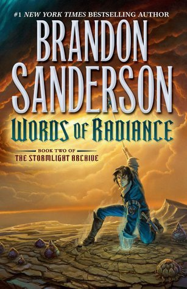

Words of Radiance
⭐️⭐️⭐️⭐️
Original Review: I found this to be a really enjoyable book. I love Sanderson's writing style, and feel like the interludes and flashbacks make this story really unique. The world his built is still just as enveloping as ever. I was somewhat relieved to learn that of the 10 books planned for the Stormlight Archive, that there will be a somewhat natural pause after five of them.
For the actual book itself, I feel like I have to compare it to the first in the series. To avoid spoilers, I'll make this simple. The first book felt like it dropped a bombshell on you at the end of the book, whereas this book tied up a bit too nicely for my tastes. Sure, plenty of questions were raised, but none of them feel like they'll pull me as eagerly into the third book as I was pulled into this second book. All nit-picking aside, I loved the story. It has a steady plot that never feels like it drags, great (and not unreasonable) twists, characters I can relate to, and a richly creative world that feels like a feast for my mind. Great stuff.
11/18/2020 Review: It's tough to watch characters you like struggle - even if you know the conclusion. This is my 3rd? 4th? time through the book, and I very much enjoy it. Brandon Sanderson makes it so easy to join them in their triumphs, and feel the sorrow of their defeats. I'll hold my rating of 4/5.